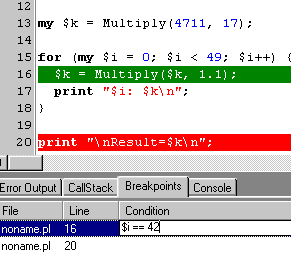
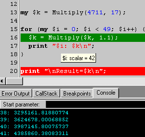
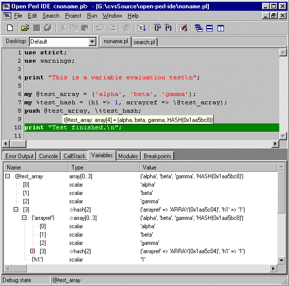
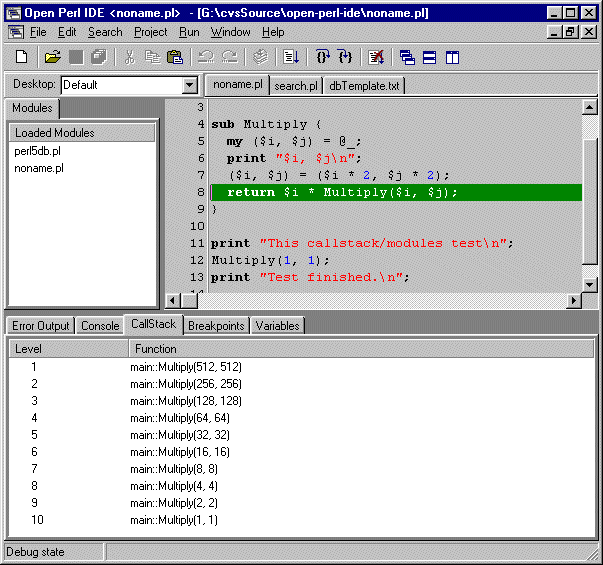
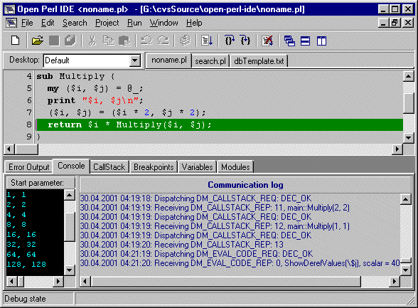

Open Perl IDE - User Manual
Version 0.9.8.168a
5 Script Debugging
This section explains how to use Open Perl IDE for debugging.
Important:
Open Perl IDE is not able to debug any scripts, if it does not know
a path to "perl.exe". If the PATH environment variable contains a
valid location, then "perl.exe" will be detected automatically.
Otherwise it is necessary to enter a valid location into
the "Preferences | General | Directories | Path to perl.exe" field.
There are two methods to debug a script:
- Set one or more breakpoints (as explained in section 5.1 Breakpoints)
and run the script, which is executed until a breakpoint is reached.
- Choose Step Over from the Run Menu. After the script and all required
modules are loaded and initalized, the execution stops on the first line
of non-initialization code.
After execution is stopped, it is possible to analyse the actual state of
the script by
- Viewing Console Output, see section 4.2 Compile and Run a script
- Evaluating some variables, see section 5.2 Variable Evaluation
- Viewing the list of loaded modules, see section 5.3 Other debug windows
- Viewing the callstack, see section 5.3 Other debug windows
Furthermore, it is possible to set/delete breakpoints
(see section 5.1 Breakpoints) or to continue/abort the execution of the
script. The following table shows the different navigation possibilities:
Table 5-1: Debug Navigation
| Name | Shortcut | Description |
| Run | F9 | Start/Continue script execution until next breakpoint is reached. |
| Step Over | F8 | Execute the current script line, not tracing into subroutines. |
| Step Into | F7 | Execute the next command in the current script line, tracing into subroutines. |
| Abort | CTRL-F2 | Abort debug session. |
If script execution has finished, then Open Perl IDE automatically switches
back from debug mode to edit mode.
5.1 Breakpoints
A breakpoint is a module/line/condition combination, defining a rule to stop
script execution in debug mode.
You can set or delete a breakpoint on a specific line by clicking on the
line number. All breakpoints are listed in the Breakpoints window, which can
be shown or hidden from "Window | Debug windows" menu.
If you set a new breakpoint, the associated break condition is always true.
If you do not want this behaviour, change the condition by double clicking,
as shown in the following figure.
Figure 5-1: Change a breakpoint condition (left) and debug script (right)


5.2 Variable Evaluation
There are two methods to evaluate code in Open Perl IDE:
- Hint Evaluation: Move the mouse cursor over the variable / selection
of interest. The code is immediately evaluated and be shown in a hint window.
This hint evaluation can be enabled or disabled in the "Preferences | General" tab.
- Watch Tree: Select and drag the code of interest and drop it into the
Variables window or double click the empty line in the watch tree and enter
the code. The evaluation is immediately shown in a tree view.
All scalar values in this watch tree can be changed. To change a watch or
a scalar value, simply double click on the corresponding field and enter the
new value. The Variables window can be shown or hidden from
the "Window | Debug windows" menu.
Currently, code like 2*3 can not be directly evaluated in watch
tree - use (2*3) instead.
The following screenshot shows an example for both, hint evaluation and
watch tree view of a circular nested data structures.
Figure 5-2: Hint Evaluation and Watch Tree

The evaluation display format is configurable, read section 5.5 Debugger
Internals for details.
5.3 Other Debug Windows
There are two other debug windows, which can be shown or hidden from the
"Window | Debug windows" Menu:
- Loaded Modules
List of all loaded modules. Double click shows the
selected module in an editor window.
- Call Stack
List of all called functions with parameters.
This screenshot shows both, the module window and the call stack window
during a debug session, in which the function Multiply is recursively called
several times.
Figure 5-3: Loaded Modules and Call Stack

5.4 Debugger Internals
5.4.1 The Debugger Script Template (dbTemplate.txt)
There is a file named dbTemplate.txt located in your Open Perl IDE directory
and created the first time, the program is started. This file is a template
file for the perl5db.pl script, used by the Perl debugger - and you can
modify it to customize the debug behaviour.
For example: Changing the sub routine ShowDerefValues will affect the hint evaluation.
Here is a short reference of all functions used in dbTemplate.txt:
Table 3: Debugger script functions
| Category | Function | Description |
| Breakpoint handling | AddBreakpoint | Add a breakpoint |
| DeleteBreakpoint | Delete a breakpoint |
| ClearBreakpoints | Clear all breakpoints from a given module. |
| CallStack handling | GetCallStack | Get Call Stack info for a given level. |
| Communication control | SendReport | Send a report from debugger script to the IDE. |
| ReceiveRequest | Receive a request from the IDE. |
| HandleRequest | Handle a request from the IDE. |
| Exception handling | try | Part of the try/catch scenario. |
| catch | Part of the try/catch scenario. |
| Finalization | END | Finalize debugger script. |
| Helper functions | IntToHex | Convert an integer value to hex representation. |
| HexEncode | Convert (string) to (hex encoded length of string)(string) |
| ExpandFileName | Convert a relative filename to an absolute filename. |
| Initialization | BEGIN | Open socket connection to IDE and initialize debugger script. |
| Magic Perl debug functions | DB | This function is called for each script line to execute. |
| sub | This function is called for each subroutine call. |
| postponed | This function is called for each loaded module. |
| Variable evaluation | HashToStr | Get a string representation of a hash. |
| ArrayToStr | Get a string representation of an array. |
| ShortEval | Get a short string representation of a reference (used for watch tree evaluation). |
| LongEval | Get a long string representation of a reference (used for watch tree evaluation). |
| InternalEvalCode | Evaluate code |
| ShowDerefValues | Get a string representation of a reference (used for hint evaluation). |
See the Open Perl IDE Software Design Specification for further information.
5.4.2 Message Communication Log Window
Figure 5-4: Communication log

|